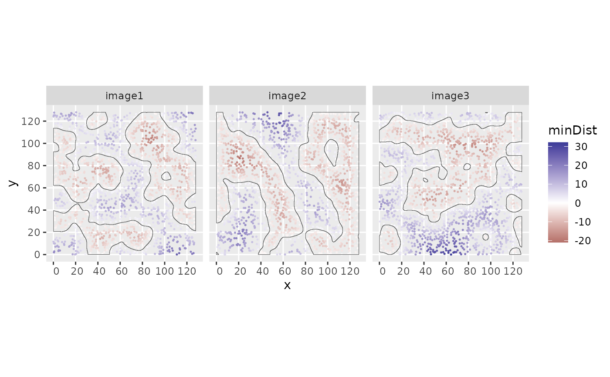

Compute minimum boundary distances for each cell within its corresponding image structures
Source:R/cellLevelMetrics.R
minBoundaryDistances.RdCompute minimum boundary distances for each cell within its corresponding image structures
Arguments
- spe
SpatialExperiment object
- imageCol
character; name of the
colDatacolumn specifying the image name- structColumn
character; name of the
colDatacolumn specifying structure assignments- allStructs
sf object; contains spatial structures with corresponding image names
- nCores
integer; The number of cores to use for parallel processing (default is 1).
Value
A named list containing the minimum distances between cells and structure boundaries,
values within structures have negative values. Names correspond to colnames of the SpatialExperiment input object.
Examples
library("SpatialExperiment")
data("sostaSPE")
allStructs <- reconstructShapeDensitySPE(sostaSPE,
marks = "cellType", imageCol = "imageName",
markSelect = "A", bndw = 3.5, thres = 0.045
)
# The function `assingCellsToStructures` needs colnames so we create them here
colnames(sostaSPE) <- paste0("cell_", c(1:dim(sostaSPE)[2]))
# Assign the structure assignment in the order of the columns in the `SpatialExperiment` object
colData(sostaSPE)$structAssign <- assingCellsToStructures(
spe = sostaSPE, allStructs = allStructs, imageCol = "imageName"
)[colnames(sostaSPE)]
res <- minBoundaryDistances(
spe = sostaSPE, imageCol = "imageName", structColumn = "structAssign",
allStructs = allStructs
)
colData(sostaSPE)$minDist <- res[colnames(sostaSPE)]
if (require("ggplot2")) {
cbind(colData(sostaSPE), spatialCoords(sostaSPE)) |>
as.data.frame() |>
ggplot(aes(x = x, y = y, color = minDist)) +
geom_point(size = 0.25) +
scale_colour_gradient2() +
geom_sf(data = allStructs, fill = NA, inherit.aes = FALSE) +
facet_wrap(~imageName)
}
